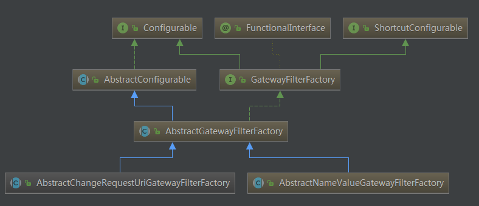

微服务网关就是一个系统，通过暴露该微服务网关系统，方便我们进行相关的鉴权，安全控制，日志统一处理，易于监控，限流等相关功能。
Gateway工作原理
Gateway的执行流程如下：
1 | 1:Gateway的客户端向Spring Cloud Gateway发起请求，请求首先会被HttpWebHandlerAdapter进行提取组装成网关的上下文，然后网关的上下文会传递到DispatcherHandler。 |
Gateway路由
Gateway路由配置分为基于配置的静态路由设置和基于代码动态路由配置
静态路由是指在application.yml中把路由信息配置好了，而动态路由则支持在代码中动态加载路由信息，更加灵活，我们接下来把这2种路由操作都实现一次。
基于配置路由设置
配置参数说明：
1 | routes:路由配置 |
通过在配置文件中配置以上参数实现路由
基于代码路由配置
我们同样实现上面的功能，但这里基于代码方式实现。所有路由规则我们可以从数据库中读取并加载到程序中。基于代码的路由配置我们只需要创建RouteLocator并添加路由配置即可，代码如下：
1 | public RouteLocator routeLocator(RouteLocatorBuilder builder){ |
在真实场景中，基于配置文件的方式更直观、简介，但代码的路由配置是更强大，可以实现很丰富的功能，可以把路由规则存在数据库中，每次直接从数据库中加载规则，这样的好处是可以动态刷新路由规则，通常应用于权限系统动态配置。
Gateway-Predicate
上面路由匹配规则中我们都用了- Path方式，其实就是路径匹配方式，除了路径匹配方式，Gateway还支持很多丰富的匹配方式，我们对这些方式分别进行讲解。
routes下面的属性含义如下：
1 | id：我们自定义的路由 ID，保持唯一 |
Predicate 来源于 Java 8，Predicate 接受一个输入参数，返回一个布尔值结果。该接口包含多种默认方法来将 Predicate 组合成其他复杂的逻辑（比如：与，或，非）
在 Spring Cloud Gateway 中 Spring 利用 Predicate 的特性实现了各种路由匹配规则，通过 Header、请求参数等不同的条件来作为条件匹配到对应的路由。
Cookie：
Gateway的Cookie匹配接收两个参数：一个是 Cookie name ,一个是正则表达式。路由规则就是通过获取对应的 Cookie name 值和正则表达式去匹配，如果匹配上就会执行路由，如果没有匹配上则不执行。如下配置：
1 | gateway: |
这里表示请求携带了cookie为username的数据，并且值为test，就允许通过。
Header 匹配：
Header 匹配 和 Cookie 匹配 一样，也是接收两个参数，一个 header 中属性名称和一个正则表达式，这个属性值和正则表达式匹配则执行。配置如下：
1 | gateway: |
上面的匹配规则，就是请求头要有token属性，并且值必须为数字和字母组合的正则表达式，例如携带token=19and30就可以通过访问。
请求方式匹配：
通过请求的方式是 POST、GET、PUT、DELETE 等进行路由。配置如下：
1 | gateway: |
Gateway过滤器
Spring Cloud Gateway根据作用范围划分为GatewayFilter和GlobalFilter，二者区别如下：
- GatewayFilter : 需要通过spring.cloud.routes.filters 配置在具体路由下，只作用在当前路由上或通过spring.cloud.default-filters配置在全局，作用在所有路由上；gateway内置了多种过滤器工厂，配套的过滤器可以直接使用，如下图所示：

- GlobalFilter : 全局过滤器，不需要在配置文件中配置，作用在所有的路由上，最终通过GatewayFilterAdapter包装成GatewayFilterChain可识别的过滤器，它为请求业务以及路由的URI转换为真实业务服务的请求地址的核心过滤器，不需要配置，系统初始化时加载，并作用在每个路由上。
过滤器作为Gateway的重要功能。常用于请求鉴权、服务调用时长统计、修改请求或响应header、限流、去除路径等等。
过滤器分类
1 | 默认过滤器:出厂自带，实现好了拿来就用，不需要实现 |
默认过滤器十好几个，常见如下：
| 过滤器名称 | 说明 | 对应的类 | 父类 |
|---|---|---|---|
| AddRequestHeader | 对匹配上的请求加上Header | AddRequestHeaderGatewayFilterFactory | AbstractNameValueGatewayFilterFactory |
| AddRequestParameters | 对匹配上的请求路由 | AddRequestHeaderGatewayFilterFactory | AbstractNameValueGatewayFilterFactory |
| AddResponseHeader | 对从网关返回的响应添加Header | AddResponseHeaderGatewayFilterFactory | AbstractNameValueGatewayFilterFactory |
| StripPrefix | 对匹配上的请求路径去除前缀 | StripPrefixGatewayFilterFactory | AbstractGatewayFilterFactory |
默认过滤器的使用
所谓默认过滤器就是系统自带的。有很多，这里简要说明几个：（通过java配置，注释掉yaml配置）
1)添加响应头
AddResponseHeaderGatewayFilterFactory 属于 GatewayFilter
对输出响应头设置属性，比如对输出的响应设置其头部属性名称为：X-Response-Default-MyName , 值为test
修改配置文件，配置如下：
1 | spring: |
2)前缀处理
在项目中做开发对接接口的时候，我们很多时候需要统一API路径，比如统一以/api开始的请求调用hailtaxi-driver服务，但真实服务接口地址又没有/api路径，我们可以使用Gateway的过滤器处理请求路径。
在gateway中可以通过配置路由的过滤器StripPrefix实现映射路径中的前缀处理，我们来使用一下该过滤器，再进一步做说明。
1 | gateway: |
此处- StripPrefix=1表示真实请求地址是当前用户请求以/api开始的uri中去除第1个路径/api.
自定义GatewayFilter
1、实现GatewayFilter接口
GatewayFilter 一般作用在某一个路由上，需要实例化创建才能使用，局部过滤器需要实现接口GatewayFilter、Ordered。
1 | import org.springframework.cloud.gateway.filter.GatewayFilter; |
1 | import com.itheima.filter.DriverFilter; |
2、继承GatewayFilterFactory
如果定义局部过滤器，想在配置文件中进行配置来使用，可以继承AbstractGatewayFilterFactory<T>抽象类或者AbstractNameValueGatewayFilterFactory
整个体系结构为：

这两个抽象类的区别就是前者接收一个参数（像StripPrefix和我们创建的这种），后者接收两个参数（像AddResponseHeader）
代码的编写可以参考：StripPrefixGatewayFilterFactory 和 AddRequestHeaderGatewayFilterFactory
过滤器工厂默认命名规则必须按照”名称”+GatewayFilterFactory`，如上StripPrefixGatewayFilterFactory的过滤器名称为StripPrefix
2.1、继承AbstractGatewayFilterFactory
1 | import lombok.Data; |
2、配置文件中使用如下：
1 | filters: |
2.2、继承AbstractNameValueGatewayFilterFactory
直接查看AddRequestHeaderGatewayFilterFactory源码，分析即可！
自定义GlobalFilter
定义全局过滤器需要实现GlobalFilter,Ordered接口：
1 | GlobalFilter:过滤器拦截处理方法 |
需求：
我们创建全局过滤器并完成常见业务用户权限校验，如果请求中有带有一个名字为token的请求参数，则认为请求有效放行，如果没有则拦截提示授权无效。
创建全局过滤器：
1 | import lombok.extern.slf4j.Slf4j; |
跨域配置
出于浏览器的同源策略限制。同源策略（Sameoriginpolicy）是一种约定，它是浏览器最核心也最基本的安全功能，如果缺少了同源策略，则浏览器的正常功能可能都会受到影响。可以说Web是构建在同源策略基础之上的，浏览器只是针对同源策略的一种实现。同源策略会阻止一个域的javascript脚本和另外一个域的内容进行交互。所谓同源（即指在同一个域）就是两个页面具有相同的协议（protocol），主机（host）和端口号（port）。
在Spring Cloud Gateway中配置跨域是非常简单的，如下面application.yml所示：
1 | gateway: |
另外一种写法就需要创建CorsWebFilter过滤器，代码如下：
1 | /** |
限流
网关可以做很多的事情，比如，限流，当我们的系统 被频繁的请求的时候，就有可能 将系统压垮，所以 为了解决这个问题，需要在每一个微服务中做限流操作，但是如果有了网关，那么就可以在网关系统做限流，因为所有的请求都需要先通过网关系统才能路由到微服务中。
令牌桶算法讲解
令牌桶算法是常见的限流算法之一，我们讲解一下漏桶算法：
1 | 1）所有的请求在处理之前都需要拿到一个可用的令牌才会被处理； |
令牌桶算法的实现，有很多技术，Guaua是其中之一，redis客户端也有其实现。
spring cloud gateway 默认使用redis的RateLimter限流算法来实现，外面来简要实现一下：
1、引入依赖
首先需要引入redis的依赖：
1 | <!--redis--> |
1 | redis: |
2、定义KeyResolver
在Application引导类中添加如下代码，KeyResolver用于计算某一个类型的限流的KEY也就是说，可以通过KeyResolver来指定限流的Key。
我们可以根据IP来限流，比如每个IP每秒钟只能请求一次，在GatewayApplication定义key的获取，获取客户端IP，将IP作为key，如下代码：
1 | /*** |
在路由中配置如下：
1 | gateway: |
参数说明：
1 | redis-rate-limiter.replenishRate是您希望允许用户每秒执行多少请求，而不会丢弃任何请求。这是令牌桶填充的速率 |
如上配置： 表示 一秒内，允许 一个请求通过，令牌桶的填充速率也是一秒钟添加一个令牌。 最大突发状况 也只允许 一秒内有一次请求，可以根据业务来调整 。